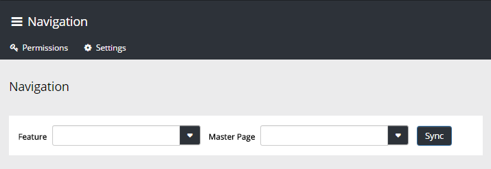
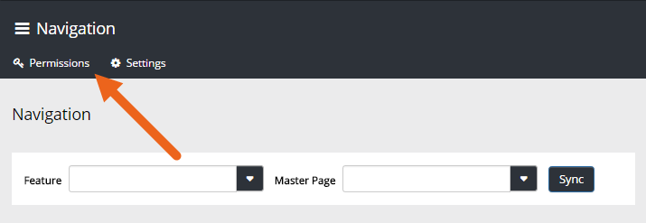

This option is used to syncronize Omnia Navigation with Sharepoint navigation. This is needed if you have done any navigation changes using Sharepoint standard functionality, for example through the Sharepoint Term Store Management.

You need to be Global Admin to use this option. If any other users should be able to do this, click "Permissions" and add them.

"Settings" is used by programmers and therefore not part of the scope for this documentation.